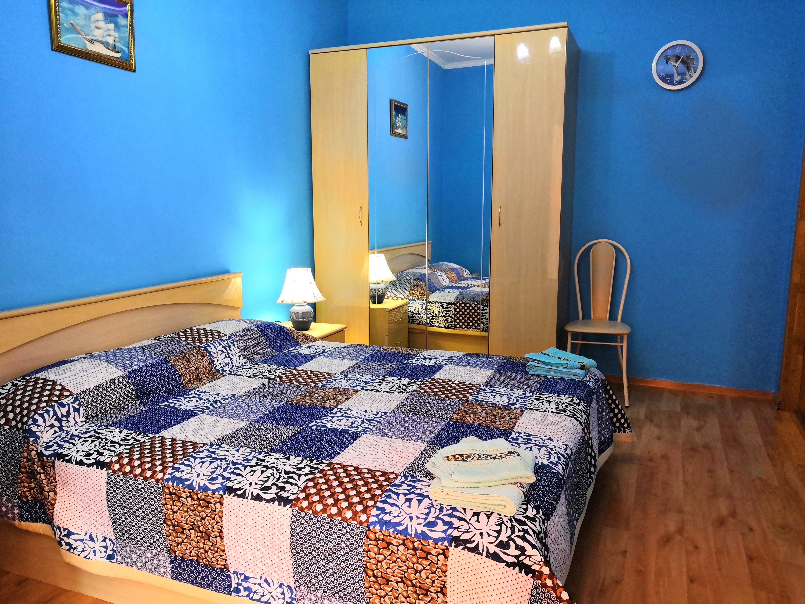
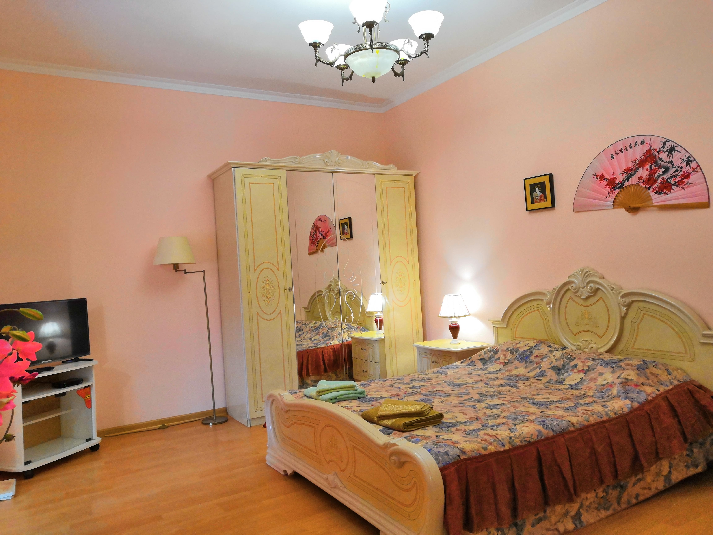
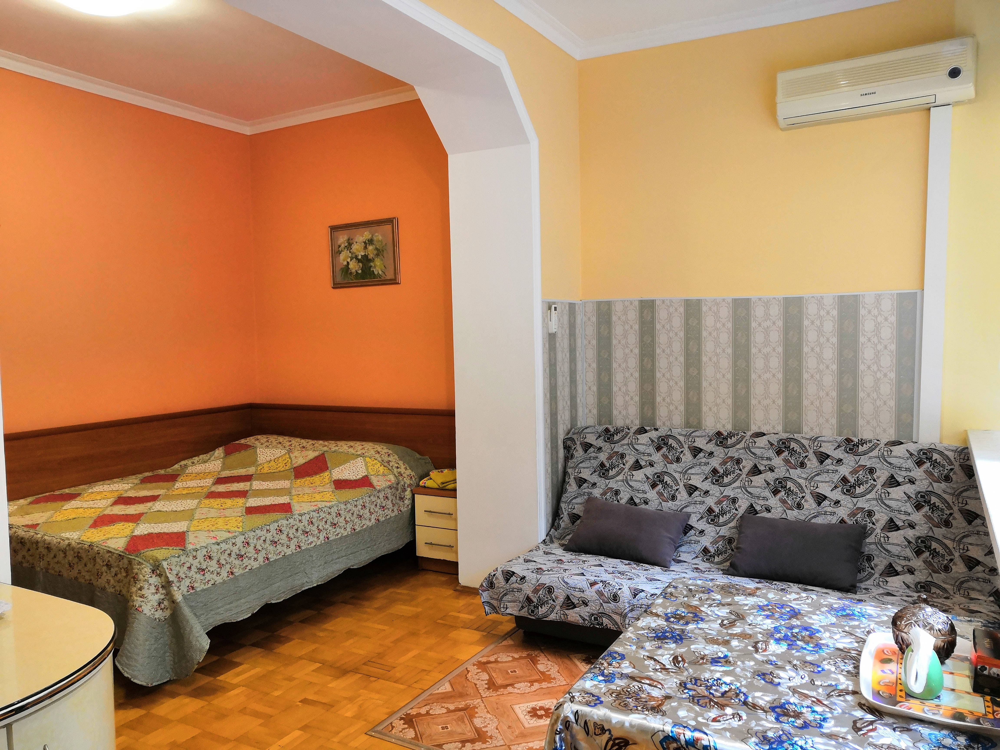
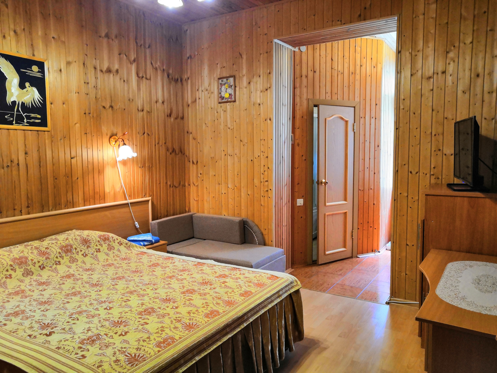

Это просто РАЙСКИЙ УГОЛОК
КОТТЕДЖ
ул. Лазурная,
д. 7а, Геленджик
1 минута до моря
КОМНАТЫ
У нас представлены несколько видов номеров:
одно- и двухкомнатных,
с полностью оборудованной кухней и без кухни
НАШИ НОМЕРА:
Свадебный
 Просторная комната для двух человека с третьим дополнительным местом. Здесь очень любят останавливаться молодожены ЦЕНА: от 2000 руб. УЗНАТЬ БОЛЬШЕ |
Апартаменты
 Шикарный вариант с потрясающим видом на море. Занимают весь этаж. Рассчитаны на проживание 2-4 гостей. ЦЕНА: от 2000 руб. УЗНАТЬ БОЛЬШЕ |
Двухкомнатный с кухней
Отличный вариант для комфортного отдыха всей семьи. Две полноценные комнаты и кухня ЦЕНА: от 2000 руб. УЗНАТЬ БОЛЬШЕ |
Император Японии с кухней
Стильная комната для любителей Японии. Расчитана на два человека с третьим дополнительным местом. ЦЕНА: от 2000 руб. УЗНАТЬ БОЛЬШЕ |
Большая семья с кухней
Оптимальный вариант для размещения семьи. Рассчитана для 2-4 гостей. ЦЕНА: от 2000 руб. УЗНАТЬ БОЛЬШЕ |
Деревянная спальня
Для любителей экологически чистых материалов - комната из натурального дерева. Рассчитана на 2 гостей с 3-им дополнительным местом. ЦЕНА: от 1000 руб. УЗНАТЬ БОЛЬШЕ |
ИДЕАЛЬНОЕ МЕСТОРАСПОЛОЖЕНИЕ
Мы находимся почти в самом центре бухты - это тихий и живописный район на достаточном удалении от шума ночных дискотек. Наша улица расположена в дубовой роще, где тень дубов и близость моря создают в душе умиротворение и комфорт.

1 минута до моря прогулочным
шагом
5 минут до аквапарка "Бегемот"
10 минут до аэропорта на авто